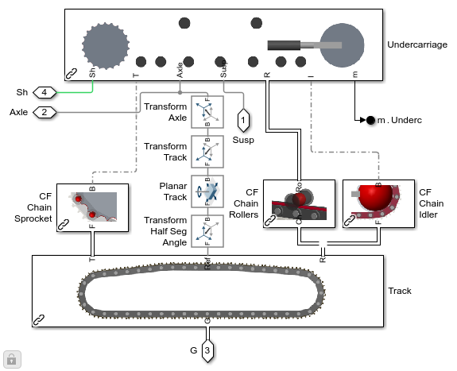
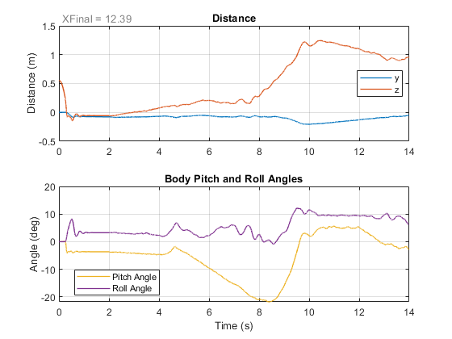

Generate Chain Track
This example shows MATLAB commands to automatically generate a new track with the desired number of upper rollers, lower rollers, and track segments . Template models for track subsystems (frame, undercarriage, chain, etc.) are copied into new library files and modified using MATLAB commands including add_block(), add_line() to modify the block diagram. The final track is then tested in a single-track model.
The code used in the example is genTVchain_completeTrack.m.
Return to overview Tracked Vehicle Model with Simscape™
Copyright 2023-2025 The MathWorks, Inc
Contents
- Final Test Model
- 1. Modify Frame to Accommodate Rollers
- 2. Modify Undercarriage to Include Rollers
- 3. Modify Track to Include Desired number of Segments
- 4-6. Assemble Arrays of Contact Forces within Track
- 7. Assemble Components into New Track
- 8. Generate new set of Chain Joint Targets
- 9. Assemble Arrays of Contact Forces for Terrain
- Simulate model
Final Test Model
This single track model is automatically generated by swapping in the newly created track into provided example sm_excv_track1_ptcld
genTVchain_completeTrack
Warning: The model name '<a href="matlab:open_system ('test_newTrack_jntTgts_GEN_i1u4l6')">test_newTrack_jntTgts_GEN_i1u4l6</a>' is shadowing another
name in the MATLAB workspace or path. Type "which -all
<a href="matlab:open_system ('test_newTrack_jntTgts_GEN_i1u4l6')">test_newTrack_jntTgts_GEN_i1u4l6</a>" at the command line to find the other uses of
this name. You should change the name of the model to avoid problems.
Warning: The model name '<a href="matlab:open_system ('sm_excv_track1_ptcld_GEN_i1u4l6')">sm_excv_track1_ptcld_GEN_i1u4l6</a>' is shadowing another
name in the MATLAB workspace or path. Type "which -all
<a href="matlab:open_system ('sm_excv_track1_ptcld_GEN_i1u4l6')">sm_excv_track1_ptcld_GEN_i1u4l6</a>" at the command line to find the other uses of
this name. You should change the name of the model to avoid problems.
1. Modify Frame to Accommodate Rollers
Custom function genTVchain_frame() uses MATLAB commands such as add_block to add and parameterize the correct number of Rigid Transform blocks that place a frame at the attachment point for the upper and lower rollers.
load_system(newFrameFile) open_system([newFrameFile '/' newFrameSub],'force');
2. Modify Undercarriage to Include Rollers
Custom function genTVchain_rollers() adds the correct number of Revolute Joints, Rollers, and Connection Ports so that it can connect to the previously created Frame subsystem. The Simscape Bus of geometry connections is created which will used to model contact with the chain.
This shows the undercarriage subsystem with frame and rollers.
load_system(newUndercFile) open_system([newUndercFile '/' newUndercSubs],'force');
This shows the rollers and the Simscape bus of geometry connections
open_system([newUndercFile '/' newUndercSubs '/Rollers'],'force');
3. Modify Track to Include Desired number of Segments
Custom function genTVchain_chain() adds the correct number of chain segments and connects them into a chain. The function also adds Simscape Busses that group the geometry connections to model contact with the sprocket, idler, and rollers.
load_system(newChainFile) open_system([newChainFile '/' newChainSubs],'force');
4-6. Assemble Arrays of Contact Forces within Track
Custom function genTVchain_chain2element() assembles arrays of contact force elements to model contact forces between the chain and idler, sprocket, and rollers.
This set of elements models contact between each chain segement and the idler.
load_system(newChainElemFile)
open_system(newChainIdler,'force');
This subsystem models contact between each chain segment and the sprocket.
open_system(newChainSprocket,'force');
This subsystem models contact between each chain segment and each roller.
open_system(newChainRoller,'force');
7. Assemble Components into New Track
Custom function genTVchain_track() takes each of the newly created subsystems and swaps them into a template track model. The undercarriage, chain of track segments, and subsystems modeling contact between the chain and undercarriage elements have their ReferenceBlock parameter modified to point to the new subsystems.
load_system(newTrackFile) open_system([newTrackFile '/' newTrackSub],'force');
8. Generate new set of Chain Joint Targets
The initial position of the track needs to be obtained. That is done using a test harness model test_newTrack_jntTgts. A default set of joint targets is assembled using function sm_excv_track_segTargets_forAsy. The test harness model holds the driveshaft for the sprocket at 0 degrees, and the final angles between the chain segments and the tensioner extention amount are extracted from the simulation results using function genTVchain_targets .
open_system(newMdlGenTargets);
9. Assemble Arrays of Contact Forces for Terrain
Custom function genTVtrack_terrain() is used to assemble contact force elements to model contact between each segment of the track and the terrain. The function updates each terrain option within the template library file.
This shows the terrain and subsystem with contact force elements.
load_system(newContactTerrainFile) open_system([newContactTerrainFile '/Grid Surface Slope 1 Track'],'force');

This models contact between each chain segment and the terrain.
open_system([newContactTerrainFile '/Grid Surface Slope 1 Track/CF Track Terrain L'],'force');
Simulate model
Simulation results from the test model
sim(newTestModel) sm_excv_track_plot1loc(simlog_sm_excv_track1_ptcld,logsout_sm_excv_track1_ptcld) sm_excv_track_plot2trq(simlog_sm_excv_track1_ptcld)
Elapsed Sim Time = 160.2664
close all bdclose all